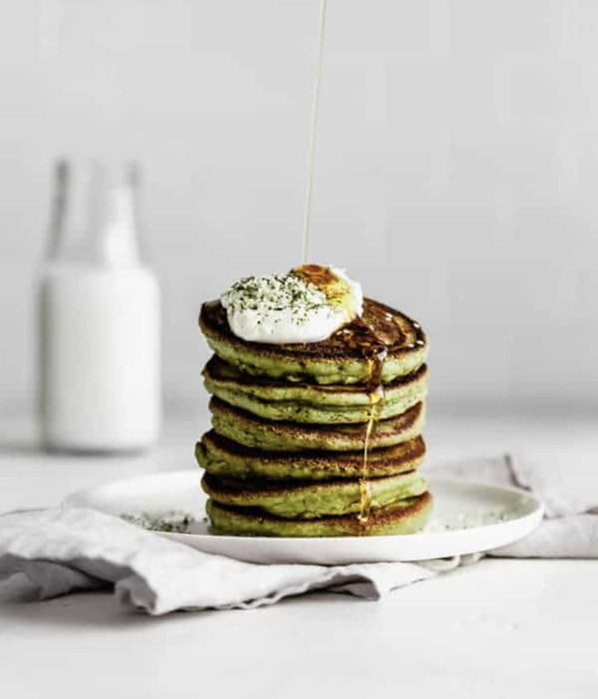

Delicous Matcha pancakes
Preparing Match pancakes is quick and straighforward.This recipes is enjoyed any time of the day.
Ingredients
- 2 tsp matcha Powder
- 60g spinach
- 100ml milk
- 200g self raising flour
- 4 medium fresh chopped tomatoes
- 1 tsp baking Powder
- 2 tbsp maple syrup
- 1/2 tsp vanilla extract
- 3 eggs
- 25g butter, melted plus extra for frying
- parsely
- dried basil leaves
To serve
- handful green grapes
- few mint leaves
- 4 tbsp lime marmalade or lime curd, warmed
- 4 tbsp natural yogurt
Preparation steps
- Put the matcha powder, spinach and milk into a blender and whizz up until smooth. Pour it into a bowl with the rest of the pancake ingredients and whisk until the mixture is lump-free.
- Melt a small knob of butter in a large non-stick pan then start frying the pancakes making each one from approx. 2 tbsp batter. Cook them for 2-3 mins then flip over and cook for another minute on the reverse. You will need to do this in 3 or 4 batches depending on the size of your frying pan
- Serve the pancakes stacked up with plenty of green fruit and a drizzle of warm lime curd or marmalade if you like.
Yum, enjoy!
Return to top
Return to main page